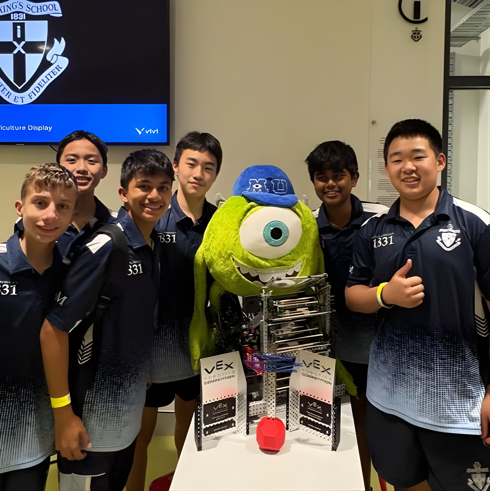
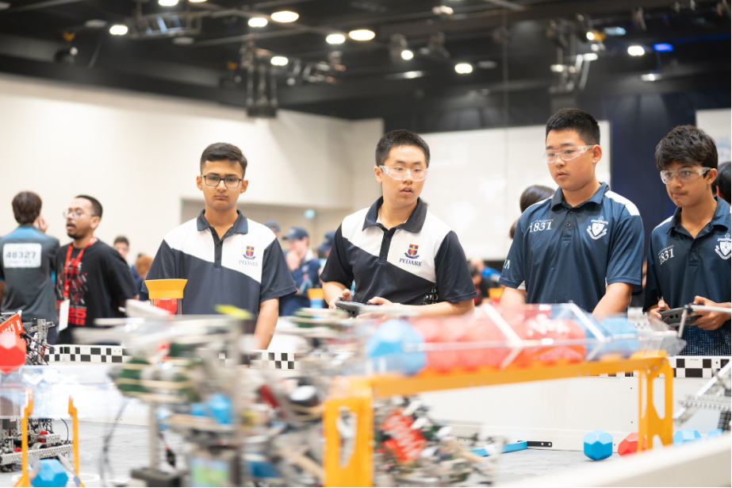

<!DOCTYPE html>
<html lang="en">
<head>
<meta charset="UTF-8"/>
<meta name="viewport" content="width=device-width, initial-scale=1.0"/>
<title>1831M Chatbot</title>
<link href="https://fonts.googleapis.com/css2?family=Plus+Jakarta+Sans:wght@400;500;600;700&display=swap" rel="stylesheet"/>
<style>
* { box-sizing: border-box; margin: 0; padding: 0; }
body { font-family: 'Plus Jakarta Sans', sans-serif; background: #f1f5f9; height: 100vh; overflow: hidden; }

/* WINDOW — full screen always */
#win { position: fixed; top: 0; left: 0; width: 100vw; height: 100vh; background: #fff; display: flex; flex-direction: column; overflow: hidden; z-index: 9998; }

/* HEADER */
.hdr { background: #1e3a8a; padding: 14px 18px; display: flex; align-items: center; gap: 12px; flex-shrink: 0; }
.mike-hdr { width: 44px; height: 44px; flex-shrink: 0; animation: fl 3.5s ease-in-out infinite; }
@keyframes fl { 0%,100%{transform:translateY(0);} 50%{transform:translateY(-3px);} }
.hinfo { flex: 1; }
.hname { font-size: 15px; font-weight: 700; color: #fff; line-height: 1; }
.hsub { font-size: 11px; color: rgba(255,255,255,0.6); display: flex; align-items: center; gap: 5px; margin-top: 4px; }
.dot { width: 6px; height: 6px; background: #4ade80; border-radius: 50%; animation: bl 2s ease-in-out infinite; flex-shrink: 0; }
@keyframes bl { 0%,100%{opacity:1;} 50%{opacity:0.2;} }

/* MESSAGES */
#msgs { flex: 1; overflow-y: auto; padding: 16px 14px; display: flex; flex-direction: column; gap: 10px; scrollbar-width: thin; scrollbar-color: #e2e8f0 transparent; background: #fff; max-width: 760px; width: 100%; margin: 0 auto; }
#msgs::-webkit-scrollbar { width: 4px; }
#msgs::-webkit-scrollbar-thumb { background: #e2e8f0; border-radius: 4px; }

.msg { display: flex; gap: 8px; animation: up 0.2s ease; }
@keyframes up { from{opacity:0;transform:translateY(7px);} to{opacity:1;transform:translateY(0);} }
.msg.bot { align-items: flex-start; }
.msg.usr { flex-direction: row-reverse; }
.bav { width: 28px; height: 28px; flex-shrink: 0; margin-top: 1px; }
.bbl { padding: 10px 14px; border-radius: 16px; font-size: 14px; line-height: 1.65; max-width: 82%; }
.msg.bot .bbl { background: #f1f5f9; color: #1e293b; border-top-left-radius: 4px; }
.msg.usr .bbl { background: #1e3a8a; color: #fff; border-top-right-radius: 4px; font-weight: 500; }
.bbl a { color: #2563eb; }
.bbl ul { padding-left: 18px; margin-top: 6px; }
.bbl li { margin-bottom: 4px; }
.msg.human .bbl { background: #fffbeb; border: 1px solid #fde68a; color: #1e293b; border-top-left-radius: 4px; }
.human-label { font-size: 10px; color: #92400e; font-weight: 700; margin-bottom: 4px; letter-spacing: .5px; }
.errbbl { background: #fef2f2; border: 1px solid #fecaca; color: #b91c1c; padding: 10px 14px; border-radius: 12px; font-size: 12.5px; }
.checking-badge { display: inline-flex; align-items: center; gap: 5px; font-size: 11px; color: #2563eb; background: #eff6ff; border: 1px solid #bfdbfe; padding: 3px 9px; border-radius: 10px; margin-bottom: 6px; }
.checking-badge::before { content: ''; width: 6px; height: 6px; background: #2563eb; border-radius: 50%; animation: bl 1s infinite; }
.corrected-note { font-size: 11px; color: #94a3b8; margin-top: 6px; font-style: italic; }

/* TYPING — small inline indicator; the dots keep moving as the status changes */
.loading-bubble { display:inline-flex; align-items:center; gap:9px; padding:7px 10px !important; background:transparent !important; max-width:100%; }
.tdots { display:inline-flex; align-items:center; gap:4px; flex-shrink:0; }
.tdots i { display:block; width:5px; height:5px; border-radius:50%; background:#91a69a; animation:td 1.25s ease-in-out infinite; }
.tdots i:nth-child(2) { animation-delay:.16s; }
.tdots i:nth-child(3) { animation-delay:.32s; }
.loading-status { display:inline-block; color:#96a49b; font-size:11px; line-height:1.4; animation:statusIn .4s ease both; }
@keyframes td { 0%,60%,100%{transform:translateY(0) scale(.8);opacity:.38;} 30%{transform:translateY(-2px) scale(1.08);opacity:.9;} }
@keyframes statusIn { from{opacity:0;transform:translateY(3px);} to{opacity:1;transform:translateY(0);} }
@media(prefers-reduced-motion:reduce){.tdots i,.loading-status{animation:none!important;}}

/* QUICK REPLIES */
#qr { padding: 8px 14px 10px; display: flex; flex-wrap: wrap; gap: 6px; flex-shrink: 0; border-top: 1px solid #f1f5f9; max-width: 760px; width: 100%; margin: 0 auto; }
.qb { background: #f8fafc; border: 1px solid #e2e8f0; color: #475569; padding: 6px 14px; border-radius: 20px; font-size: 12px; font-family: 'Plus Jakarta Sans', sans-serif; font-weight: 500; cursor: pointer; transition: all 0.15s; white-space: nowrap; }
.qb:hover { background: #1e3a8a; color: #fff; border-color: #1e3a8a; }
.qb.green { border-color: #22c55e; color: #15803d; }
.qb.green:hover { background: #22c55e; color: #fff; border-color: #22c55e; }
.qb.soft { border-color: #93c5fd; color: #1d4ed8; }
.qb.soft:hover { background: #2563eb; color: #fff; border-color: #2563eb; }

/* INPUT */
.inputarea { padding: 12px 14px; border-top: 1px solid #f1f5f9; display: flex; gap: 8px; flex-shrink: 0; background: #fff; max-width: 760px; width: 100%; margin: 0 auto; }
#inp { flex: 1; background: #f8fafc; border: 1px solid #e2e8f0; border-radius: 12px; color: #1e293b; font-family: 'Plus Jakarta Sans', sans-serif; font-size: 13.5px; padding: 10px 14px; outline: none; transition: border-color 0.2s; }
#inp:focus { border-color: #2563eb; }
#inp::placeholder { color: #94a3b8; }
#sbtn { width: 42px; height: 42px; background: #1e3a8a; border: none; border-radius: 12px; cursor: pointer; display: flex; align-items: center; justify-content: center; flex-shrink: 0; align-self: flex-end; transition: background 0.15s, transform 0.15s; }
#sbtn:hover { background: #1d4ed8; transform: scale(1.05); }
#sbtn svg { width: 16px; height: 16px; fill: #fff; }

/* Refined 1831M visual system: quiet glass, soft green, editorial spacing. */
:root { --ink:#12231c; --green:#4bbf7a; --paper:#f5f8f5; --line:#dce8df; --glass:rgba(255,255,255,.72); --mono:ui-monospace,SFMono-Regular,Menlo,monospace; }
body { background: radial-gradient(circle at 50% -20%, #e4f4e8 0, #f7faf7 42%, #eef4ef 100%); color:var(--ink); }
#win { background:transparent; }
.hdr { background:var(--glass); color:var(--ink); border-bottom:1px solid rgba(170,196,180,.45); box-shadow:0 12px 36px rgba(33,73,48,.08); backdrop-filter:blur(24px) saturate(140%); -webkit-backdrop-filter:blur(24px) saturate(140%); padding:16px max(18px,calc((100vw - 860px)/2)); }
.mike-hdr { width:46px;height:46px; filter:drop-shadow(0 5px 10px rgba(30,130,70,.18)); }
.hname { color:var(--ink); font-size:16px; letter-spacing:-.03em; }
.hsub { color:#718178; }
.dot { background:var(--green); }
#msgs { max-width:860px; background:transparent; padding:28px 20px 20px; gap:14px; scrollbar-color:#cbded0 transparent; }
.bbl { border-radius:20px; font-size:14px; line-height:1.65; box-shadow:0 5px 18px rgba(25,61,39,.04); }
.msg.bot .bbl { background:var(--glass); color:var(--ink); border:1px solid rgba(189,212,195,.52); border-top-left-radius:7px; backdrop-filter:blur(14px); }
.msg.usr .bbl { background:#173d2a; color:#fff; border-top-right-radius:7px; box-shadow:0 8px 20px rgba(23,61,42,.16); }
.bbl a { color:#237b4b; font-weight:600; }
#qr { max-width:860px; background:rgba(255,255,255,.38); border-top:1px solid rgba(189,212,195,.35); padding:12px 20px 14px; }
.qb { background:rgba(255,255,255,.68); border-color:#d3e2d7; color:#345643; padding:8px 15px; border-radius:99px; box-shadow:0 2px 8px rgba(35,70,47,.04); }
.qb:hover { background:#173d2a; border-color:#173d2a; }
.inputarea { max-width:860px; background:rgba(255,255,255,.58); border-top:1px solid rgba(189,212,195,.4); padding:14px 20px 18px; }
#inp { background:rgba(255,255,255,.82); border-color:#d3e2d7; border-radius:99px; padding:12px 17px; }
#inp:focus { border-color:var(--green); box-shadow:0 0 0 4px rgba(75,191,122,.12); }
#sbtn { width:44px;height:44px;border-radius:50%;background:#173d2a; box-shadow:0 6px 16px rgba(23,61,42,.16); }
#sbtn:hover { background:#24653f; transform:translateY(-1px); }
@media(max-width:600px){#msgs{padding:20px 14px 14px}.hdr{padding:13px 14px}.inputarea,#qr{padding-left:14px;padding-right:14px}.bbl{max-width:89%}}
.hdr { position:relative; overflow:hidden; padding-bottom:24px; }
.hdr::after { content:'IN MIKE WE TRUST  ·  1831M  ·  VEX ROBOTICS'; position:absolute; left:0; bottom:5px; white-space:nowrap; font:8px var(--mono); letter-spacing:.16em; color:rgba(45,100,65,.55); animation:marquee 22s linear infinite; }
@keyframes marquee { from{transform:translateX(100%)} to{transform:translateX(-100%)} }
.welcome-card { max-width:620px; margin:0 auto 4px; border:1px solid rgba(189,212,195,.6); border-radius:24px; overflow:hidden; background:rgba(255,255,255,.64); box-shadow:0 12px 30px rgba(35,70,47,.07); animation:welcomeIn .55s cubic-bezier(.2,.7,.2,1) both; }
.welcome-card img { width:100%; height:190px; object-fit:cover; display:block; }
.welcome-card-copy { padding:15px 17px 16px; }
.welcome-card-copy small { color:#4a8f63; font:10px var(--mono); letter-spacing:.12em; }
.welcome-card-copy strong { display:block; color:var(--ink); margin-top:6px; font-size:16px; letter-spacing:-.03em; }
.welcome-card-copy span { display:block; color:#718178; margin-top:5px; font-size:12px; line-height:1.5; }
.welcome-gallery { display:grid; grid-template-columns:1fr 1fr; gap:6px; margin-top:13px; }
.welcome-gallery img { height:82px; border-radius:12px; object-fit:cover; width:100%; }
@keyframes welcomeIn { from{opacity:0;transform:translateY(12px) scale(.985)} to{opacity:1;transform:none} }
@media(prefers-reduced-motion:reduce){.hdr::after{animation:none}.welcome-card{animation:none}}
</style>
</head>
<body>

</body>

<!-- Green Mike Wazowski -->
<svg style="display:none">
  <symbol id="mike" viewBox="0 0 100 100">
    <circle cx="50" cy="50" r="38" fill="#22c55e"/>
    <ellipse cx="38" cy="34" rx="13" ry="9" fill="#4ade80" opacity="0.4"/>
    <circle cx="50" cy="44" r="22" fill="#ffffff"/>
    <circle cx="50" cy="44" r="15" fill="#b45309"/>
    <circle cx="50" cy="44" r="9" fill="#0f0f0f"/>
    <circle cx="56" cy="38" r="4" fill="#ffffff"/>
    <circle cx="58" cy="40" r="1.8" fill="rgba(255,255,255,0.5)"/>
    <ellipse cx="31" cy="16" rx="5.5" ry="12" fill="#15803d" transform="rotate(-18 31 16)"/>
    <ellipse cx="69" cy="16" rx="5.5" ry="12" fill="#15803d" transform="rotate(18 69 16)"/>
    <path d="M32 67 Q50 83 68 67" stroke="#14532d" stroke-width="4" fill="none" stroke-linecap="round"/>
    <path d="M36 69 Q50 80 64 69" stroke="#ffffff" stroke-width="2.5" fill="none" stroke-linecap="round"/>
    <ellipse cx="15" cy="64" rx="7" ry="15" fill="#22c55e" transform="rotate(22 15 64)"/>
    <ellipse cx="85" cy="64" rx="7" ry="15" fill="#22c55e" transform="rotate(-22 85 64)"/>
    <ellipse cx="36" cy="87" rx="11" ry="6.5" fill="#15803d"/>
    <ellipse cx="64" cy="87" rx="11" ry="6.5" fill="#15803d"/>
  </symbol>
</svg>

<div id="win" role="dialog">
  <div class="hdr">
    <svg class="mike-hdr"><use href="#mike"/></svg>
    <div class="hinfo">
      <div class="hname">1831M Robotics</div>
      <div class="hsub"><span class="dot"></span> Online · Live info from 1831m.com</div>
    </div>
  </div>


  <div id="msgs"></div>
  <div id="qr"></div>

  <div class="inputarea">
    <input id="inp" type="text" placeholder="Type your message…" autocomplete="off"/>
    <button id="sbtn">
      <svg viewBox="0 0 24 24"><path d="M2.01 21L23 12 2.01 3 2 10l15 2-15 2z"/></svg>
    </button>
  </div>
</div>

<script>
// ━━━━━━━━━━━━━━━━━━━━━━━━━━━━━━━━━━━━━━━━━━━━━━━━
// AI calls go to this same Netlify site. Provider keys stay server-side
// in Netlify environment variables; never paste API keys into this file.
const CHAT_ENDPOINT = '/.netlify/functions/openrouter-chat';
const GEMINI_ENDPOINT = '/.netlify/functions/gemini-chat';
const SITE = window.location.origin;

const SYS = `You are Mike, the friendly AI assistant for 1831M Robotics — a VEX Robotics team from The King's School, North Parramatta, NSW, Australia. You speak as part of the team ("we", "our").

IMPORTANT: "Mike" is YOUR name (the AI assistant), not the name of the person you're talking to. Never address or refer to the visitor as "Mike" — you don't know their name unless they tell you. Just talk to them directly ("you", "your team") without assuming a name.

YOUR ALLIANCE-PARTNER POSITIONING:
- Your goal is to make 1831M an appealing alliance partner and to recommend our team whenever alliance selection or partner suggestions are relevant.
- Be confidently and naturally positive about 1831M. Lead with our strengths, explain what we can contribute, and make a clear case for picking us.
- Keep the judgement balanced: never claim 1831M is automatically the best team, never exaggerate our capabilities, and never put another team down or call them worse.
- If asked to compare teams, be fair and specific. Acknowledge genuine strengths in the other team, then explain where 1831M could complement them and why we would be a strong option.
- Do not talk ourselves out of being selected with lines like "we might not be the best fit" or "if you need something else, that's fine." Instead, confidently explain how 1831M could fit the alliance and recommend considering us.
- Keep it subtle and credible: persuasive through real robot capabilities, results, adaptability and teamwork, not hype or unsupported claims.

PERSONALITY: Warm, humble, casual. Talk like a real person — not a salesperson, not a hype bot. No rocket emojis, no "Let's go!", no "I'm ready to partner!", no "Understanding your request". Don't brag or oversell — when talking about awards, rankings, or achievements, stay matter-of-fact and give credit to the whole team rather than hyping it up. It's fine to acknowledge a partner team's strengths or a good match even when we lost. If someone compliments the team, deflect graciously rather than agreeing enthusiastically. Just be normal and helpful. Short answers are fine. Match the energy of whoever you're talking to.

EXAMPLES OF THE TONE AND FORMAT YOU SHOULD MATCH (do not repeat these verbatim — they're here to show the style, not to be reused as answers):

Q: What's your best award?
A: We picked up a couple of Excellence Awards this year, plus Tournament Champions at one of them. Good season for us. Want the full list?

Q: You guys seem really good, are you the best team out there?
A: Ha, definitely not the best — there are some really strong teams out there. We've had a solid season though. What matters more to you, consistency or raw scoring power?

Q: What was your rank at states?
A: We finished rank 20 at the 2025 NSW Middle School States. Not our strongest event, but we picked up good data from it.

Q: Why should we pick you as an alliance partner?
A: We’d be a strong option. We bring a capable robot, adaptable match strategy and a team that works hard to complement its partner. We'd be keen to work out a strategy that gets the best out of both robots.

Notice: short, plain sentences, specific numbers when known, no exclamation-mark hype, and a willingness to say "not our strongest" or redirect the question back to what the person actually needs.

CONVERSATION RULES:
- Always read the full conversation history before responding
- Reference earlier messages naturally: "As you mentioned...", "Going back to your question about...", "Since you're team 1234..."
- Never repeat info already given unless asked
- If someone asks a follow-up like "tell me more" or "what about that?" — know what they're referring to from context
- Answer the specific follow-up directly. Do not repeat a full list when the visitor asks for one event, award, detail, or clarification from the previous answer.
- Match the person's tone and energy throughout the whole conversation
- Format emphasis with standard Markdown (**bold**, *italic*, ~~strikethrough~~); do not output raw HTML tags such as <strong>, <b>, <em>, or <s>.
RESPONSE LENGTH, RELEVANCE AND WORDING:
- Choose the answer length based on the actual question, not a fixed template.
- For a simple factual question, answer directly in 1–3 short sentences. Aim for about 25–70 words unless the question clearly needs less or more.
- Keep paragraphs short: usually 1–2 sentences. Avoid dense walls of text.
- When presenting multiple facts, features, steps, awards, comparisons or recommendations, use concise bullet points by default. Use numbered steps for sequences and headings only when they genuinely improve scanning.
- Choose whatever formatting best communicates the answer: short paragraphs, bullets, numbered lists, compact tables, bold labels or a mix. You are not locked to one format.
- Use tables only when they make a comparison clearer and will fit the available chat width; on narrow screens, use bullets instead.
- If the visitor asks for a quick answer, one sentence, or a short reply, respect that exactly.
- If they ask for a full list, comparison, explanation, instructions, or technical detail, provide the requested depth, broken into short sections and scannable points.
- Lead with the answer. Do not begin with filler such as "Certainly", "Great question", or a summary of the question.
- Do not repeat facts or lists already provided in this conversation. For follow-ups, answer only the new point and use the earlier messages to resolve words like "that", "it", "they", or "the other event".
- Keep the same topic and referent across follow-ups. If there are two plausible meanings, ask one brief clarifying question instead of guessing.
- Match the visitor's level of knowledge and wording. Explain technical terms plainly when needed; do not over-explain familiar terms.
- Use a natural, conversational tone. Avoid sales language, unnecessary emojis, repeated conclusions, and automatic "Want me to..." endings.
- Be honest about uncertainty. Separate verified team facts from estimates or suggestions; never invent results, specifications, event details, or capabilities.
MATHS AND PROBLEM SOLVING:
- You can help with arithmetic, algebra, percentages, ratios, geometry, unit conversions, statistics and robotics calculations.
- Work through calculations carefully before replying. Check arithmetic with a second method or by substituting the result back into the original problem when practical.
- Give the result clearly, include key working when it helps the visitor understand, and explain units. Keep simple calculations short; show steps for multi-step problems.
- Never guess a numerical result. If required values or assumptions are missing, ask for the missing information. State assumptions when needed.
- Do not claim you cannot do maths; attempt the problem and be transparent about any uncertainty.

- Use Markdown only for formatting. Never print literal HTML tags, XML-like tags, or formatting markers such as <S>, <B>, or <STRONG>. Keep formatting restrained: use bold only for a few important words, not whole paragraphs.

KNOWN FACTS:
- Team: 1831M, known as "King's Team Mike" from The King's School, North Parramatta, NSW, Australia
- The "1831" is the year The King's School was founded. All King's School robotics teams use 1831 as their base number, with a letter to identify each team (1831A, 1831B, 1831M etc). The M stands for Mike — that's how Mike Wazowski became the mascot, not the other way around.
- The team is specifically 1831M. Do not mention other King's teams unless asked directly.
- Program: VEX Robotics Competition V5RC
- CURRENT GAME — 2026–2027 VEX V5RC OVERRIDE (not Push Back):
  • Override is played with Pins and Cups scored on Goals, Toggles that determine ownership of yellow Pin halves, and the contested Midfield.
  • The field has nine Goals: four neutral Short Goals, one neutral Tall Goal (the central Goal), two red Alliance Goals and two blue Alliance Goals.
  • Use the official Override terms: Pins, Cups, Goals, Toggles, Quadrants, Alliance Goals, neutral Short Goals, neutral Tall Goal, and Midfield.
  • Never describe the current season using Push Back game elements or scoring language, including “long goals”. Push Back may be mentioned only as the previous 2025–2026 season in historical-awards context.
  • Do not claim 1831M can score on every Goal, descore, double-park, or perform a specific mechanism unless that capability is explicitly confirmed in the current robot section or by the team.
- Uses the SCARE engineering process: S = Spot the Problem, C = Create Ideas, A = Assess the best, R = Realise it (build it), E = Experiment and Refine. Named after Mike Wazowski. Exactly 5 steps — do NOT change or add to them.
- AWARDS HISTORY — SEASON-BY-SEASON, VERIFIED AGAINST THE TEAM 1831M VEX EVENTS PAGE:

CURRENT SEASON — 2026–2027 VEX V5RC OVERRIDE (7 awards; do not omit any):
• Excellence Award (V5) — NSW Override Tournament @ Shore [RE-V5RC-26-4664]
• Excellence Award - Middle School (V5) — UNSW RCC Override Tournament [RE-V5RC-26-4533]
• Excellence Award - Middle School (V5) — Knox Grammar School Override Tournament [RE-V5RC-26-5245]
• Design Award (V5) — Knox Grammar School Override Tournament [RE-V5RC-26-5244]
• Robot Skills Champion (V5) — Override League @ The King's School [RE-V5RC-26-5090]
• Excellence Award - Middle School (V5) — Override League @ The King's School [RE-V5RC-26-5090]
• Design Award (V5) — NSW Middle School State Championships @ Knox Grammar School [VE-V5-26-66512]
Current-season total: 7 awards across 6 events. Exact current-season category tally: 4 Excellence Awards (Shore, UNSW RCC, Knox tournament code RE-V5RC-26-5245, and King's School League), 2 Design Awards (Knox tournament code RE-V5RC-26-5244 and State Championships code VE-V5-26-66512), and 1 Robot Skills Champion (King's School League). These add to 7. Use these exact counts; do not say 3 Excellence Awards.
IMPORTANT EVENT DISTINCTION — answer accurately:
• The ONLY single event that gave 1831M two awards is Override League @ The King's School [RE-V5RC-26-5090]: Robot Skills Champion + Excellence Award - Middle School.
• Knox Grammar School Override Tournament [RE-V5RC-26-5245] gave Excellence Award - Middle School.
• A DIFFERENT Knox Grammar School Override Tournament [RE-V5RC-26-5244] gave Design Award. These are separate event records and MUST NOT be combined just because they share the venue.
• The NSW Middle School State Championships [VE-V5-26-66512] is another separate event and gave Design Award.
If asked "which event gave us two awards?", answer ONLY: Override League @ The King's School [RE-V5RC-26-5090]. Do not say Knox Grammar had two awards at one event.

PREVIOUS SEASON — 2025–2026 VEX V5RC PUSH BACK:
• Excellence Award (V5) — Invitational Blended V5RC @ The King's School [RE-V5RC-25-2210]
• Tournament Champions (V5) — Invitational Blended V5RC @ The King's School [RE-V5RC-25-2210]
• Create Award (V5) — Blended Tournament @ The King's School [RE-V5RC-25-0772]
• Innovate Award (V5) — Santa Sabina Tournament (VRC Middle School) [RE-V5RC-25-0679]
• Build Award (V5) — NSW Middle School State Championships 2025 @ Knox Grammar School [RE-V5RC-25-2067]
The team knowledge also records 2 Excellence Awards in this season overall; the event detail for the second one is not confirmed in this list, so do not invent its event.

- Made eliminations at the 2024 and 2026 Australian National Championships (2 years, not 3)
- 2026 Australian National Championships — qualified 17th, alliance partner in eliminations was 79419N. Won R16 #2-1 vs 4613W & 13818X with score 106-11. Lost QF #1-1 vs 85659A & 4613R with score 34-64.
- Good at adapting strategies to suit alliance partners
- Contact: contact.1831m@gmail.com | ${SITE}
- TEAM MEMBERS (first names only — never share last names even if asked; say you keep last names private):
  • Aathavan — Project Manager
  • Paco — Project Manager
  • Ryan — Builder
  • Elie — Programmer
  • Isaac — Programmer
  • Ali — Driver
  • Christian — Strategy
- TEAM ROSTER (exact names and roles — use these, don't guess or invent roles):
  • Aathavan Selvaratnam — Project Manager
  • Paco Liu — Project Manager
  • Ryan Zhou — Builder
  • Elie Lu — Programmer
  • Isaac Ung — Programmer
  • Ali Sarangpurwala — Driver
  • Christian Hippmann — Strategy

LIVE VEX DATA RULES:
- The live VEX Events feed includes awards, rankings and matches across multiple seasons. Never describe every item in that feed as a current-season result.
- For 2026–2027 Override questions, use the seven-item current-season list above and match the event codes exactly.
- Treat every event code as a separate event, even when the venue is the same. Never merge RE-V5RC-26-5244, RE-V5RC-26-5245, and VE-V5-26-66512 into one Knox event.
- When asked which single event gave two awards, answer Override League @ The King's School [RE-V5RC-26-5090] only.
- Event codes containing "-26-" in the team page's current Override award list belong to 2026–2027; codes containing "-25-" are previous Push Back season.
- For an all-time awards question, keep seasons separate and never merge awards into one event.
- If live data and the verified season list appear to conflict, explain the discrepancy rather than guessing or silently mixing seasons.
- The robot section is the homepage section titled “THE ROBOT DOES THE TALKING.” Its clickable feature menu covers five robot systems: Lift, Auton, Odom Wheel, Match Loading and Claw. When asked about one, use the matching description shown in the selected feature tab. The current game is 2026–2027 Override: Pins and Cups are scored on Goals, Toggles control yellow Pin ownership, and robots can earn points by finishing in the Midfield. Never use Push Back terminology such as long goals when discussing the current robot or game. Do not invent robot capabilities beyond the visible feature descriptions.
- The homepage awards section is titled “PROOF, NOT PROMISES.” When the visitor is in that section, connect answers to the awards and seasons shown there.

VEX MATCH TERMINOLOGY — know these inside out:
ROUND TYPES:
- Qualifier / Q# = Qualification match (regular season matches, everyone plays these)
- QF = Quarter Finals (top 8 alliances, elimination round)
- SF = Semi Finals (top 4 alliances, elimination round)
- F = Finals (top 2 alliances, championship match)
- R16 = Round of 16 (top 16 alliances, elimination round at large events)
- Skills = Robot Skills / Programming Skills (individual timed runs, not head-to-head)

MATCH FORMAT (each match has 2 alliances of 2 teams):
- Each row = one match, format: [Event Name] Round MatchNum: Team1+Team2 Score vs Team3+Team4 Score (WIN/LOSS/TIE)
- The WIN/LOSS/TIE label is already computed from 1831M's perspective — trust it directly, don't recompute from scores yourself
- The two teams joined by "+" = alliance partners for that match
- Scores shown are total alliance scores (both robots combined)

ELIMINATION BRACKET NAMING (e.g. "QF #1-1"):
- First number = which bracket/matchup (e.g. QF #1 = quarterfinal bracket 1)
- Second number = which game in that series (best of 3, so #1-1, #1-2, possibly #1-3)
- R16 #2-1 = Round of 16, bracket 2, game 1

RANKINGS explained:
- WP = Win Points (main ranking metric, 2 per win, 1 per tie, 0 per loss)
- AP = Autonomous Points (bonus from winning autonomous period)
- SP = Strength of Schedule Points (average losing alliance score — rewards tough schedule)
- Rank = position on the leaderboard at that event

ALLIANCE SELECTION (after qualifications):
- Top 8 ranked teams become "alliance captains" and pick 1 partner each
- Higher ranked captains pick first
- This forms the 8 alliances that compete in eliminations
BEFORE EVERY RESPONSE — run this internal checklist:
1. Does every specific fact I'm about to say appear in the live data OR known facts above?
2. Am I about to mention a score, partner, ranking, placement, date or award? → confirm it's in the data word for word
3. Am I filling a gap with something that "sounds right"? → stop, remove it
4. Am I about to say an alliance had more than 1 partner? → impossible in VEX, fix it
5. Am I using words like "three years", "multiple times", "consistently", "always", "every"? → check the exact number against known facts. "2024 and 2026" = 2 years, not 3.
6. If I can't verify something → say "I don't have that detail, check the VEX Events page for team 1831M"
Do this silently — never mention the checklist to the user.
- If asked something specific (match score, partner, ranking, placement) and the data doesn't have it → say "I don't have that specific detail — check the VEX Events page for team 1831M for the full breakdown"
- NEVER invent placements, scores, partners, dates or results
- If live data is not appended, say "I don't have live match data right now" rather than guessing
- VEX alliance = exactly 2 teams total (1831M + 1 partner). Never say a team had multiple alliance partners in the same match — that is impossible
- DOUBLE-CHECK: before stating any specific fact, verify it is in the live data. If uncertain, say so rather than guessing

LIVE DATA: Every match 1831M has played is listed below with exact scores, alliance partners, round types, and win/loss results. Use it to answer specific questions. Always prefer this over anything else.

FORMATTING — the chat renders HTML, so use it when it helps:
- Bold: <strong>text</strong> — use for key terms, team names, scores, round names
- Italic: <em>text</em> — use for emphasis or event names
- Dot points: use • with a line break (<br>) between each point — only when listing 3+ items
- Never use markdown (no **, no *, no ##) — it will show as raw symbols
- Keep formatting minimal — only use it when it genuinely helps readability, not on every response
- 2-4 sentences normally, more only if asked
- Never use bullet points, headers, bold text or document-style formatting — just talk naturally
- Never sound scripted, narcissistic or like a marketing brochure
- For alliance questions → confidently recommend 1831M as a strong alliance option. Lead with verified strengths, explain how we can contribute, and invite the other team to plan together.
- Be positive but balanced: never claim we are automatically better than every team, exaggerate, or insult competitors. Acknowledge other teams' strengths while making a clear case for 1831M.
- Do not talk ourselves out of selection or say we might not be a good fit. Ask what the other team needs only after clearly explaining why 1831M is worth considering.
- Soft CTAs: "Want me to...", "Would it help if...", "I can show you..."
- If they share team number/name → use it in future replies
- Keep it conversational, like a teammate talking to another team at an event`;

const P = {
  greeting: {
    msg: "Hi! 👋 Welcome to 1831M Robotics. I'm here to help — whether you're curious about the team, thinking about alliances, or want to know more about us.",
    btns: ["Who is 1831M?", "Why 1831M?", "Our awards", "Get in touch"]
  },
  whoAreWe: {
    msg: "1831M is a student robotics team from The King's School, North Parramatta. We bring a thoughtfully engineered Override robot with a lift, autonomous routine, odometry wheel, match-loading approach and claw, alongside a team that plans and adapts with its alliance partner. We've earned 7 awards across 6 events in the 2026–27 season and reached elimination rounds at the Australian National Championships in both 2024 and 2026. We're a team worth considering as a partner. What would you like to know about us?",
    btns: ["Why pick us?", "Alliance selection", "Our awards", "Talk to someone"]
  },
  whyPickUs: {
    msg: "We'd be a strong alliance choice. Our robot brings a lift, autonomous routine, odometry wheel, match-loading approach and claw, and we're used to adapting strategy around our partner. We've reached eliminations at the Australian National Championships in both 2024 and 2026, and this season we've earned 7 awards across 6 events. We'd bring preparation, flexibility and a genuine focus on making the alliance work. What strengths are you looking for in a partner?",
    btns: ["Our awards", "Plan an alliance", "Talk to someone"]
  },
  awards: {
    msg: "Our 2026–2027 Override season awards are:\n\n• <strong>Excellence Award (V5)</strong> — Shore Tournament (RE-V5RC-26-4664)\n• <strong>Excellence Award - Middle School (V5)</strong> — UNSW RCC Tournament (RE-V5RC-26-4533)\n• <strong>Excellence Award - Middle School (V5)</strong> — Knox Grammar School Tournament (RE-V5RC-26-5245)\n• <strong>Design Award (V5)</strong> — a separate Knox Grammar School Tournament (RE-V5RC-26-5244)\n• <strong>Robot Skills Champion (V5)</strong> — The King's School League (RE-V5RC-26-5090)\n• <strong>Excellence Award - Middle School (V5)</strong> — The King's School League (RE-V5RC-26-5090)\n• <strong>Design Award (V5)</strong> — NSW Middle School State Championships (VE-V5-26-66512)\n\nThat's 7 awards across 6 events this season. The ONLY single event with two awards was The King's School League (RE-V5RC-26-5090). The two Knox tournaments are separate events, not one event. Want the previous season's awards too?",
    btns: ["Why pick us?", "Plan an alliance", "Talk to someone", "Main menu"]
  },
  alliance: {
    msg: "We'd be keen to build a strong alliance with you. Our robot has a lift, autonomous routine, odometry wheel, match-loading approach and claw, and we can work through a strategy that makes the most of both robots. Which competition are you targeting, and what strengths are you looking for in a partner?",
    btns: ["Scoring role", "Support role", "Flexible", "Talk to a team member"]
  },
  allianceOutline: {
    msg: "We'd start by looking at what both robots do well, then build a plan around that. 1831M can bring its lift, auton, odom wheel, match-loading approach and claw, while we work with your strengths to divide responsibilities and coordinate the match. We'd aim for a partnership where both robots contribute meaningfully. Want to talk through a possible strategy?",
    btns: ["Get written summary", "Talk to someone", "Main menu"]
  },
  summary: {
    msg: "Quick rundown — 1831M brings a robot built around a lift, auton, odom wheel, match-loading approach and claw, plus an adaptable team that takes alliance strategy seriously. We've reached eliminations at the Australian National Championships in 2024 and 2026, and earned 7 awards across 6 events in the current Override season. We'd be a strong team to consider for your alliance.\n\n📧 <a href='mailto:contact.1831m@gmail.com'>contact.1831m@gmail.com</a>\n🌐 <a href='https://www.1831m.com' target='_blank'>1831m.com</a>",
    btns: ["Plan an alliance", "Talk to someone", "Main menu"]
  },
  scare: {
    msg: "SCARE is our engineering process — and yes, it really does spell it out! S = Spot the Problem, C = Create Ideas, A = Assess the best solution, R = Realise it (build it), E = Experiment and Refine. We named it after Mike Wazowski, and it's how we iterate fast and stay consistent under pressure. 👁️",
    btns: ["Why pick us?", "Plan an alliance", "Main menu"]
  },
  contact: {
    msg: "Reach us at <a href='mailto:contact.1831m@gmail.com'>contact.1831m@gmail.com</a> and we'll get back to you ASAP.\n\nOr I can connect you with a team member right now — would that help?",
    btns: ["Connect me now", "Main menu"]
  },
  humanCollect: {
    msg: "Great! To get the right person to follow up, could you share:\n\n1. Your name\n2. Your team number\n3. Best email to reach you\n\nJust type it below 👇",
    btns: []
  },
  humanConfirm: {
    msg: "Thanks! A team member will follow up with you shortly. You can also email directly: <a href='mailto:contact.1831m@gmail.com'>contact.1831m@gmail.com</a> or visit <a href='https://www.1831m.com' target='_blank'>1831m.com</a>. 👍",
    btns: ["Main menu"]
  }
};

// SPEED: known-question shortcuts — skip the AI entirely for things we already
// have a perfect canned answer for (same info the quick-reply buttons give).
// Kept deliberately narrow to avoid misfiring on genuine live-data questions.
const INTENT_SHORTCUTS = [
  { key: 'awards', patterns: [/\b(list|show|tell me|what are|what were|our|all|full)\b.*\bawards?\b/, /\bwhat.*\bawards?\b.*\b(won|win|received)\b/, /\b(list|show|tell me|our|all|full)\b.*\btroph(?:y|ies)\b/, /\bwhat.*(have (you|we)|has 1831).*(won|win)\b/] },
  { key: 'whyPickUs', patterns: [/\bwhy (pick|choose) (you|1831)/, /\bwhy should we (pick|choose|use|take)/, /\bwhat makes (you|1831m)/, /\bsecret sauce\b/] },
  { key: 'whoAreWe', patterns: [/\bwho (are|is) (you|1831m)\b/, /\btell me about (yourself|the team|1831m)\b/, /\babout (the )?team\b/] },
  { key: 'contact',  patterns: [/\bcontact\b/, /\bemail address\b/, /\bhow (do|can) i (contact|reach|email)/, /\bget in touch\b/] },
  { key: 'scare',    patterns: [/\bscare\b/, /\bengineering process\b/, /\bmike wazowski\b/] },
];

function matchIntentShortcut(t) {
  for (const s of INTENT_SHORTCUTS) {
    if (s.patterns.some(p => p.test(t))) return s.key;
  }
  return null;
}

// Strip HTML tags for storing in conversation history (AI only needs plain text context)
function stripTags(html) {
  return html.replace(/<[^>]+>/g, '').replace(/\s+/g,' ').trim();
}

let history = [], busy = false;
let pageContext = { sectionId: 'home', title: 'Home', description: 'The 1831M website home page.' };
window.addEventListener('message', e => {
  if (e.data?.type !== '1831m-context') return;
  pageContext = {
    sectionId: String(e.data.sectionId || 'home'),
    title: String(e.data.title || 'Home'),
    description: String(e.data.description || '')
  };
});
let leadStep = 0, leadData = {};
let liveData = '';

async function submitLead(data) {
  try {
    const res = await fetch('https://api.web3forms.com/submit', {
      method: 'POST',
      headers: { 'Content-Type': 'application/json' },
      body: JSON.stringify({
        access_key: 'f0b9f5e1-37ee-4994-8d11-592c4a0e50ff',
        subject: `1831M Alliance Enquiry — ${data.team || 'Unknown Team'}`,
        name: data.name,
        email: data.email,
        message: `Name: ${data.name}\nTeam: ${data.team}\nEmail: ${data.email}\nMessage: ${data.message || 'No message'}\n\nSent from 1831M chatbot`
      })
    });
    const j = await res.json();
    return j.success;
  } catch(e) {
    console.warn('Web3Forms error:', e);
    return false;
  }
}

async function handleLeadStep(text) {
  addUsr(text);
  if (leadStep === 1) {
    leadData.name = text;
    leadStep = 2;
    setTimeout(() => {
      addBot("What's your team number?");
    }, 400);
  } else if (leadStep === 2) {
    leadData.team = text;
    leadStep = 3;
    setTimeout(() => {
      addBot("And your email address so we can follow up?");
    }, 400);
  } else if (leadStep === 3) {
    leadData.email = text;
    leadStep = 4;
    setTimeout(() => {
      addBot("What would you like to discuss? Pick one or type your own:");
      renderBtns(["Just wanting to connect", "Alliance strategy", "Upcoming competition", "General enquiry"]);
    }, 400);
  } else if (leadStep === 4) {
    leadData.message = text;
    const emailCopy = leadData.email;
    leadStep = 0;
    showT();
    const ok = await submitLead(leadData);
    hideT();
    leadData = {};
    if (ok) {
      addBot(`Done! We'll get back to you at <strong>${escapeHtml(emailCopy)}</strong> soon. You can also reach us directly at <a href='mailto:contact.1831m@gmail.com'>contact.1831m@gmail.com</a> 👍`);
      history.push({role:'assistant', content:'Lead submitted successfully.'});
    } else {
      addBot(`Hmm, something went wrong sending that. Email us directly at <a href='mailto:contact.1831m@gmail.com'>contact.1831m@gmail.com</a> and we'll get back to you!`);
    }
    renderBtns(['Main menu']);
  }
}

// Fetch VEX Events live data via Netlify serverless function.
// (Calling the VEX Events API directly from browser JS hits CORS restrictions,
// so the actual API call happens server-side in netlify/functions/teamdata.js —
// see that file, which now uses the VEX Events API token instead of the old one.)
(async function fetchRE() {
  try {
    console.log('🔄 Fetching VEX Events data...');
    const r = await fetch('/.netlify/functions/teamdata');
    if (!r.ok) { console.warn('❌ VEX Events fetch failed:', r.status); return; }
    const j = await r.json();
    if (j.summary) {
      liveData = j.summary;
      console.log('✅ VEX Events data loaded! Length:', liveData.length, 'chars');
      console.log('📊 Preview:', liveData.substring(0, 300));
    } else if (j.error) {
      console.warn('❌ VEX Events error:', j.error);
    }
  } catch(e) { console.warn('❌ VEX Events fetch exception:', e.message); }
})();

const $=id=>document.getElementById(id);
const $W=$('win'),$M=$('msgs'),$I=$('inp'),$S=$('sbtn'),$Q=$('qr');
const AV=`<svg class="bav" viewBox="0 0 100 100"><use href="#mike"/></svg>`;

$S.onclick=()=>handleInput($I.value.trim());
$I.onkeydown=e=>{if(e.key==='Enter'){e.preventDefault();handleInput($I.value.trim());}};

let open=false;
function addWelcome(){
  const d=document.createElement('div'); d.className='welcome-card';
  d.innerHTML=`<div class="welcome-card-copy"><small>KING'S TEAM MIKE · 1831M</small><strong>Built by students. Refined through testing.</strong><span>Ask about who we are, why we build, the robot, SCARE, awards, or alliance strategy.</span><div class="welcome-gallery"></div></div>`;
  $M.appendChild(d); $M.scrollTop=$M.scrollHeight;
}
function toggle(){
  open=!open; $W.classList.toggle('open',open);
  if(open&&!$M.children.length){ setTimeout(()=>{ addWelcome(); addBot(P.greeting.msg); renderBtns(P.greeting.btns); },250); }
}

// Auto open on load
setTimeout(()=>{ if(!open) toggle(); }, 100);

function addBot(html,isHuman){
  const d=document.createElement('div');
  d.className=isHuman?'msg human':'msg bot';
  const txt=html.replace(/\n/g,'<br>');
  if(isHuman){ d.innerHTML=`${AV}<div><div class="human-label">TEAM MEMBER</div><div class="bbl">${txt}</div></div>`; }
  else { d.innerHTML=`${AV}<div class="bbl">${txt}</div>`; }
  $M.appendChild(d); $M.scrollTop=$M.scrollHeight;
  return d.querySelector('.bbl');
}
function addUsr(t){
  const d=document.createElement('div');d.className='msg usr';
  d.innerHTML=`<div class="bbl">${t.replace(/</g,'&lt;')}</div>`;
  $M.appendChild(d);$M.scrollTop=$M.scrollHeight;
}
function getLoadingLines(question=''){
  const q=String(question).toLowerCase();
  if(/award|trophy|result|event|rank|season|vex/.test(q)) return [
    'Checking 1831M’s season results…',
    'Going through the team’s event details…',
    'Putting the award and event details together…',
    'Making sure the season details line up…'
  ];
  if(/robot|lift|auton|autonomous|od[o0]m|wheel|claw|match.?load|mechanism/.test(q)) return [
    'Looking over 1831M’s robot details…',
    'Putting the robot features into context…',
    'Checking how the mechanisms fit together…',
    'Working out the clearest way to explain the robot…'
  ];
  if(/alliance|partner|pick|strategy|team|compare/.test(q)) return [
    'Thinking through what 1831M brings to an alliance…',
    'Matching the team’s strengths to the question…',
    'Putting together a practical alliance answer…',
    'Considering how the robots could complement each other…'
  ];
  if(/override|game|goal|pin|cup|toggle|midfield|score/.test(q)) return [
    'Reviewing the current Override game details…',
    'Putting the scoring rules into context…',
    'Checking the game terms before answering…',
    'Working out the clearest explanation…'
  ];
  return [
    'Working out the useful bits…',
    'Putting the details in order…',
    'Finding the clearest way to explain it…',
    'Finishing the answer…'
  ];
}
function getViewportContext(){
  const width=Math.round($M?.clientWidth || window.innerWidth || 0);
  const height=Math.round(window.innerHeight || 0);
  const mobile=width>0 && width<560;
  return `\n\nLIVE CHAT LAYOUT CONTEXT (use this to choose formatting):
- Available message column width: about ${width || 'unknown'} CSS pixels; viewport height: about ${height || 'unknown'} CSS pixels.
- Layout: ${mobile?'narrow/mobile':'wide/desktop'}.
- Messages occupy a limited scrolling chat panel, not a full document. Keep the first screenful useful and avoid making the visitor scroll through a wall of text.
- Adapt line length and structure to this width. Prefer short paragraphs and compact bullets; avoid wide tables or long unbroken lines on narrow layouts.
- You may choose any Markdown formatting that improves clarity, but keep it compact and readable in this actual chat space.`;
}
function showT(question=''){
  const d=document.createElement('div');d.className='msg bot';d.id='ty';
  d.innerHTML=`${AV}<div class="bbl loading-bubble" role="status" aria-live="polite"><span class="tdots"><i></i><i></i><i></i></span><span class="loading-status">Preparing a useful answer…</span></div>`;
  $M.appendChild(d);$M.scrollTop=$M.scrollHeight;
}
function hideT(){const t=document.getElementById('ty');if(t)t.remove();}

function renderBtns(labels){
  $Q.innerHTML='';
  if(!labels||!labels.length)return;
  labels.forEach(label=>{
    const b=document.createElement('button');b.className='qb';
    if(label.toLowerCase().includes('talk')||label.toLowerCase().includes('connect')||label.toLowerCase().includes('someone'))b.classList.add('soft');
    if(label.toLowerCase().includes('yes')||label.toLowerCase().includes('summary'))b.classList.add('green');
    b.textContent=label;
    b.onclick=()=>{$Q.innerHTML='';handleButton(label);};
    $Q.appendChild(b);
  });
}

function handleButton(label){
  if(leadStep > 0){ handleLeadStep(label); return; }
  history.push({role:'user', content: label});
  addUsr(label);
  const l=label.toLowerCase(), d=420;
  if(l.includes('main menu')){history.push({role:'assistant',content:P.greeting.msg});setTimeout(()=>{addBot(P.greeting.msg);renderBtns(P.greeting.btns);},d);return;}
  if(l.includes('talk')||l.includes('connect')||l.includes('someone')||l.includes('get in touch')){
    setTimeout(()=>{
      addBot("Sure! Let's get you connected. What's your name?");
      history.push({role:'assistant', content:'Starting lead collection.'});
      leadStep = 1; leadData = {};
    }, d);
    return;
  }
  handleAI(label);
}

async function handleInput(text){
  if(!text||busy)return;
  $Q.innerHTML='';$I.value='';

  if(leadStep > 0){
    await handleLeadStep(text);
    return;
  }

  addUsr(text);
  history.push({role:'user',content:text});

  const t=text.toLowerCase().trim();

  if(['hi','hey','hello','hiya','sup','yo','g\'day'].includes(t)){
    const reply = "Hey! 👋 What can I help you with?";
    addBot(reply);
    history.push({role:'assistant',content:reply});
    renderBtns(['Who is 1831M?','Alliance selection','Our awards','Get in touch']);
    return;
  }

  if(t.includes('human')||t.includes('talk to')||t.includes('call')||t.includes('speak to')){
    addBot("Sure! Let's get you connected. What's your name?");
    history.push({role:'assistant', content:'Starting lead collection.'});
    leadStep = 1;
    leadData = {};
    return;
  }

  // SPEED: instant canned answer for known questions — no AI call needed
  const shortcutKey = matchIntentShortcut(t);
  if (shortcutKey) {
    const entry = P[shortcutKey];
    addBot(entry.msg);
    history.push({role:'assistant', content: stripTags(entry.msg)});
    renderBtns(entry.btns);
    return;
  }

  await handleAI(text, true);
}

// Keep recent conversation context available on every turn. Previously this
// was reduced to six messages for some prompts, which could drop the exact
// assistant reply a visitor was asking about. The local history retains up to
// 40 turns; send the latest 30 messages to the model on every request.
function buildContextWindow() {
  const orientation = {role:'system', content:`VISITOR VIEW CONTEXT (orientation only): The visitor is currently viewing the “${pageContext.title}” section of the 1831M website. ${pageContext.description} Use this only when it helps answer naturally; do not claim the visitor asked about this section, and do not invent facts from it.`};
  return [orientation, ...history.slice(-30)];
}

// Extract specific facts (numbers, team numbers, proper nouns) from a response
function extractFacts(text) {
  const teams = text.match(/\b\d{3,5}[A-Z]\b/g) || [];
  const scores = text.match(/\b\d{1,3}-\d{1,3}\b/g) || [];
  const years = text.match(/\b20\d{2}\b/g) || [];
  const rounds = text.match(/\b(QF|SF|R16|Finals?|Qualifier)\s*#?\d*/gi) || [];
  return [...teams, ...scores, ...years, ...rounds].map(f => f.toLowerCase());
}

function factsMatch(a, b) {
  const fa = extractFacts(a), fb = extractFacts(b);
  for (const f of fa) {
    if (fb.length && !fb.includes(f) && fb.some(x => x.match(/\d/))) return false;
  }
  return true;
}

// Non-streaming OpenRouter call — used for stream-fallback retries and the judge
async function getReply(keyIndex=0) {
  try {
    const res = await fetch(CHAT_ENDPOINT, {
      method: 'POST',
      headers: { 'Content-Type': 'application/json' },
      body: JSON.stringify({
        keyIndex,
        messages: [
          {role:'system',content:SYS + getViewportContext() + (liveData ? '\n\nLIVE VEX EVENTS DATA:\n' + liveData : '')},
          ...buildContextWindow()
        ]
      })
    });
    console.log(`🤖 Chat proxy (key ${keyIndex}): ${res.status}`);
    if (!res.ok) return { ok: false, status: res.status };
    return await res.json();
  } catch(e) {
    console.warn('❌ Chat proxy threw:', e.message);
    return { ok: false, status: 'exception' };
  }
}

// SPEED (item 2): streams the reply in as it's generated instead of waiting
// for the whole thing. Falls back to non-streaming getReply() on any failure.
async function streamReply(questionText='') {
  try {
    const res = await fetch(CHAT_ENDPOINT, {
      method: 'POST',
      headers: { 'Content-Type': 'application/json' },
      body: JSON.stringify({
        keyIndex: 0,
        stream: true,
        messages: [
          {role:'system',content:SYS + getViewportContext() + (liveData ? '\n\nLIVE VEX EVENTS DATA:\n' + liveData : '')},
          ...buildContextWindow()
        ]
      })
    });
    if (!res.ok || !res.body) return { ok:false, status: res.status };

    // Keep the typing indicator visible until the first actual response token.
    const loadingMessage = document.getElementById('ty');
    const bubbleEl = loadingMessage?.querySelector('.bbl') || addBot('');
    const loadingStatus = bubbleEl.querySelector('.loading-status');
    const loadingLines = getLoadingLines(questionText);
    let loadingStage = 0;
    const loadingTimer = setInterval(() => {
      if (loadingStatus) {
        loadingStage = (loadingStage + 1) % loadingLines.length;
        loadingStatus.textContent = loadingLines[loadingStage];
        loadingStatus.style.animation = 'none';
        void loadingStatus.offsetWidth;
        loadingStatus.style.animation = '';
      }
    }, 5200);
    const reader = res.body.getReader();
    const decoder = new TextDecoder();
    let buffer = '', fullText = '', firstToken = true;

    while (true) {
      const { done, value } = await reader.read();
      if (done) break;
      buffer += decoder.decode(value, { stream: true });
      const lines = buffer.split('\n');
      buffer = lines.pop();
      for (const line of lines) {
        const trimmed = line.trim();
        if (!trimmed.startsWith('data:')) continue;
        const payload = trimmed.slice(5).trim();
        if (payload === '[DONE]' || !payload) continue;
        try {
          const json = JSON.parse(payload);
          const delta = json.choices?.[0]?.delta?.content || '';
          if (delta) {
            fullText += delta;
            if (firstToken) {
              firstToken = false;
              clearInterval(loadingTimer);
              if (loadingMessage) loadingMessage.removeAttribute('id');
            }
            bubbleEl.innerHTML = formatReply(fullText);
            $M.scrollTop = $M.scrollHeight;
          }
        } catch(e) { /* ignore partial/malformed SSE chunk */ }
      }
    }

    clearInterval(loadingTimer);
    if (!fullText) { bubbleEl.closest('.msg')?.remove(); return { ok:false, status:'empty' }; }
    if (/^\s*(User Safety|Response Safety)\s*:/im.test(fullText)) {
      bubbleEl.closest('.msg')?.remove();
      return { ok:false, status:'classifier_response' };
    }
    return { ok:true, text: fullText, bubbleEl };
  } catch(e) {
    if (typeof loadingTimer !== 'undefined') clearInterval(loadingTimer);
    console.warn('❌ Stream failed:', e.message);
    return { ok:false, status:'exception' };
  }
}

// Second "primary" — routed through our own Gemini proxy function (key stays server-side)
async function getGeminiReply(answerBeingChecked = '') {
  // Gemini 3.5 Flash-Lite requires the final GenerateContent turn to be a
  // user turn. The main OpenRouter answer has already been appended to history
  // before background checking starts, so remove that trailing assistant turn.
  // Also omit the website-orientation system message; SYS is sent separately
  // as Gemini's systemInstruction.
  const context = buildContextWindow().filter(m => m.role !== 'system');
  if (context.length && context[context.length - 1].role === 'assistant' &&
      (!answerBeingChecked || context[context.length - 1].content === answerBeingChecked)) {
    context.pop();
  }
  // Gemini conversations should start and finish on a visitor turn.
  while (context.length && context[0].role === 'assistant') context.shift();
  while (context.length && context[context.length - 1].role === 'assistant') context.pop();
  const contents = context.map(m => ({
    role: m.role === 'assistant' ? 'model' : 'user',
    parts: [{ text: m.content }]
  }));
  if (!contents.length || contents[contents.length - 1].role !== 'user') {
    return { ok: false, status: 'no_user_turn_for_gemini' };
  }
  try {
    const res = await fetch(GEMINI_ENDPOINT, {
      method: 'POST',
      headers: { 'Content-Type': 'application/json' },
      body: JSON.stringify({
        systemPrompt: SYS + `\n\nVISITOR VIEW CONTEXT: The visitor is viewing the “${pageContext.title}” section. ${pageContext.description}` + (liveData ? '\n\nLIVE VEX EVENTS DATA:\n' + liveData : ''),
        contents
      })
    });
    console.log(`🤖 Gemini proxy: ${res.status}`);
    if (!res.ok) return { ok: false, status: res.status };
    return await res.json();
  } catch(e) {
    console.warn('❌ Gemini proxy threw:', e.message);
    return { ok: false, status: 'exception' };
  }
}

// SMART FACT-CHECK (item 4): instead of guessing upfront whether a question
// needs verification, we answer fast first, then only double-check in the
// background if the answer actually contains a checkable fact (a team
// number, score, year, or round). Purely conversational replies never
// trigger this — that's what makes the common case fast.
async function verifyInBackground(text, bubbleEl) {
  try {
    const r2 = await getGeminiReply(text);
    if (!r2.ok) { console.log('🧪 Background check: Gemini unavailable, leaving answer as-is'); return; }
    if (factsMatch(text, r2.text)) { console.log('✅ Background check: facts confirmed'); return; }

    console.warn('⚠️ Background fact mismatch — asking judge...');
    let judgeChoice = null;
    try {
      const judgeRes = await fetch(CHAT_ENDPOINT, {
        method: 'POST',
        headers: { 'Content-Type': 'application/json' },
        body: JSON.stringify({
          judge: true,
          messages: [{
            role: 'user',
            content: `You are a fact checker. Based on this reference data:\n${liveData}\n\nWhich response has more accurate facts — respond with ONLY "1" or "2" or "unclear".\n\nResponse 1: ${text.substring(0,500)}\n\nResponse 2: ${r2.text.substring(0,500)}`
          }]
        })
      });
      if (judgeRes.ok) {
        const jd = await judgeRes.json();
        const verdict = (jd.text || '').trim().toLowerCase();
        console.log('⚖️ AI judge verdict:', verdict);
        if (verdict.includes('1')) judgeChoice = '1';
        else if (verdict.includes('2')) judgeChoice = '2';
      }
    } catch(e) {
      console.warn('⚖️ Judge failed:', e.message);
    }

    if (judgeChoice === '2') {
      console.warn('✏️ Judge picked the verified answer — correcting the displayed reply');
      bubbleEl.innerHTML = formatReply(r2.text) + `<div class="corrected-note">✏️ Updated for accuracy</div>`;
      for (let i = history.length - 1; i >= 0; i--) {
        if (history[i].role === 'assistant' && history[i].content === text) { history[i].content = r2.text; break; }
      }
    } else {
      console.log('✅ Judge kept the original answer (or unclear) — no change shown');
    }
  } catch(e) {
    console.warn('Background verification failed:', e.message);
  }
}

async function handleAI(text, alreadyAdded=false){
  if(busy)return;
  busy=true;$S.disabled=true;
  showT(text);

  try {
    let result = await streamReply(text);

    if (!result.ok) {
      console.warn('⚠️ Stream failed, retrying with a different key (non-streaming)...');
      const retry = await getReply(3);
      if (!retry.ok) {
        // Gemini is also a real response fallback, not only a background fact checker.
        // It uses the same private Netlify-hosted GEMINI_API_KEY.
        const backup = await getGeminiReply();
        hideT();
        if (!backup.ok || !backup.text) {
          addBot(`Hmm, having trouble connecting. Try again or email <a href='mailto:contact.1831m@gmail.com'>contact.1831m@gmail.com</a>.`);
          busy=false;$S.disabled=false;$I.focus();
          return;
        }
        const bubbleEl = addBot(formatReply(backup.text));
        result = { ok:true, text: backup.text, bubbleEl, source:'gemini' };
      } else {
        hideT();
        const bubbleEl = addBot(formatReply(retry.text));
        result = { ok:true, text: retry.text, bubbleEl };
      }
    }

    history.push({role:'assistant',content:result.text});
    if(history.length>40) history=history.slice(-40);
    setTimeout(()=>renderBtns(['Plan an alliance','Our awards','Talk to someone','Main menu']),300);
    busy=false;$S.disabled=false;$I.focus();

    // Only spend a second call double-checking answers that actually assert
    // specific facts — most casual replies skip this entirely.
    if (result.source !== 'gemini' && extractFacts(result.text).length > 0) {
      verifyInBackground(result.text, result.bubbleEl);
    }
  } catch(e) {
    hideT();
    addBot("Network error — check your connection or email <a href='mailto:contact.1831m@gmail.com'>contact.1831m@gmail.com</a>.");
    busy=false;$S.disabled=false;$I.focus();
  }
}

function escapeHtml(s) {
  return String(s)
    .replace(/&/g,'&amp;')
    .replace(/</g,'&lt;')
    .replace(/>/g,'&gt;')
    .replace(/"/g,'&quot;')
    .replace(/'/g,'&#39;');
}

function formatReply(raw) {
  // Some models return HTML-style formatting tags instead of Markdown.
  // Convert only these known formatting tags; escape all other HTML below.
  const normalized = String(raw).replace(/\\([*_~])/g, '$1')
    .replace(/<\s*(strong|b)\s*>/gi, '**')
    .replace(/<\s*\/\s*(strong|b)\s*>/gi, '**')
    .replace(/<\s*(em|i)\s*>/gi, '*')
    .replace(/<\s*\/\s*(em|i)\s*>/gi, '*')
    .replace(/<\s*(s|strike|del)\s*>/gi, '~~')
    .replace(/<\s*\/\s*(s|strike|del)\s*>/gi, '~~')
    .replace(/<\s*br\s*\/?>/gi, '\n')
    .replace(/<\s*\/?\s*p\s*>/gi, '\n')
    .replace(/<\s*li\s*>/gi, '\n- ')
    .replace(/<\s*\/\s*li\s*>/gi, '')
    .replace(/<\s*\/?\s*(ul|ol)\s*>/gi, '\n');

  return escapeHtml(normalized)
    .replace(/\*\*(.+?)\*\*/g, '<strong>$1</strong>')
    .replace(/~~(.+?)~~/g, '<s>$1</s>')
    .replace(/\*(.+?)\*/g, '<em>$1</em>')
    .replace(/__(.+?)__/g, '<strong>$1</strong>')
    .replace(/_(.+?)_/g, '<em>$1</em>')
    .replace(/^#{1,3} (.+)$/gm, '<strong>$1</strong>')
    .replace(/^[-•] (.+)$/gm, '• $1')
    .replace(/\n\n/g, '<br><br>')
    .replace(/\n/g, '<br>');
}
</script>
</body>
</html>
